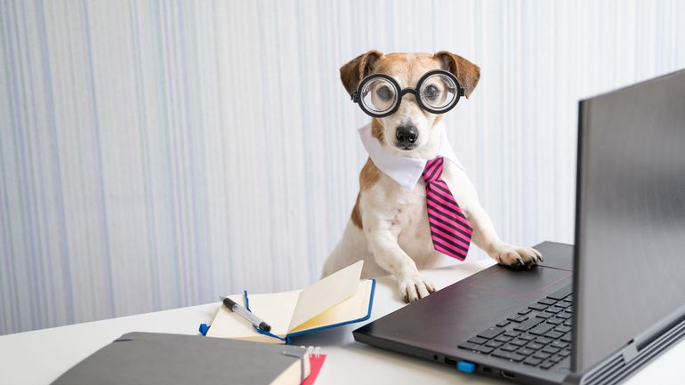
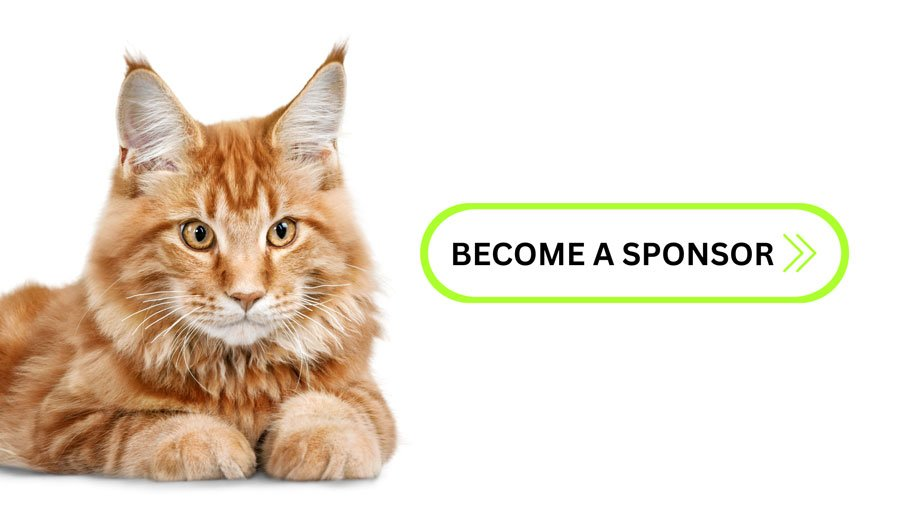

Qui sommes nous?
A propos de nous:
Notre concept est un espace de loisirs autour des animaux, proposant un large choix d'activités permettant de fabriquer des choses pour son propre animal.
Elyssa HALLOU et Nessine CHARLES, co-directrices, ont le plaisir de vous accueillir autour d’une pause gourmande et d’un large choix d’activités, comme la création de vêtements, goodies, accessoires, etc.
Notre atelier est original et se démarque des autres sur plusieurs aspects. Tout d'abord par son lien entre l'humain et l'animal. Ce que nous proposons n'est pas uniquement un lieu pour apprendre et créer des objets mais aussi un espace où les participants peuvent rencontrer d'autres amoureux des animaux et faire de belles rencontres. Chaque participant repart avec des savoir-faire concrets afin de recréer soi-même à la maison.
Bienvenue à L'Atelier Pet'Shop, le paradis créatif pour vous et votre compagnon à quatre pattes !
Chers visiteurs,
L’Atelier Pet’Shop vous invite à vivre une expérience unique avec votre animal, qu’il s’agisse d’un chat, d’un chien ou de tout autre compagnon. Partagez un moment inoubliable avec lui et découvrez nos activités conçues pour passer un agréable moment ensemble.
Laissez libre cours à votre créativité grâce à nos ateliers guidés par des experts en bien-être animal. Fabriquez par exemple des croquettes ou réalisez de la vaisselle en poterie, entièrement personnalisables selon vos envies.
Repartez avec de précieux souvenirs tout en faisant de nouvelles rencontres, partageant votre passion pour les animaux et savourant une pause gourmande.
L’atelier PetShop cherche de nouveaux membres pour agrandir la team.
Travailler avec nous, c’est travailler dans un espace de travail moderne. Notre entreprise localisée en plein cœur de Paris, vous propose un local neuf, et décoré avec des ameublements fabriqués à partir de matériaux naturels.
Vous aurez la possibilité de travailler autour d’animaux. Vivez une expérience professionnelle en lien avec votre passion pour ces derniers chouchous.
Enfin, vous aurez une totale liberté dans la gestion des ateliers. Il y a certaines règles de base pour le bon fonctionnement de l’activité, que nous vous enseignerons. Ensuite, vous pourrez adapter celles-ci en fonction de vos goûts.
L’atelier PetShop cherche des partenaires avides d’animaux. Pourquoi travailler avec nous ?
Le marché des animaux est en pleine expansion puisque le bien-être animal est en forte croissance, avec une augmentation de 20 % en France ces cinq dernières années. Notre concept répond à cette tendance, offrant aux sponsors une entrée dans ce secteur dynamique.
L'Atelier Pet'Shop, avec un taux d’adhésion de 91% à Paris, vise déjà une expansion sur le territoire national. En nous accompagnant dès aujourd'hui, vous gagnerez une visibilité sur le long terme auprès d'une clientèle passionnée à l'échelle française.
Pour finir, vous profiterez d’une visibilité alignée sur des valeurs écologiques car nos clients fidèles et engagés, apprécient les initiatives éthiques. En tant que sponsor, notamment pour des produits écologiques, vous bénéficierez d'une forte visibilité auprès de ce public en quête de marque responsable. Par exemple, grâce à nos fournisseurs de matériaux recyclés pour la confection des vêtements et accessoires.